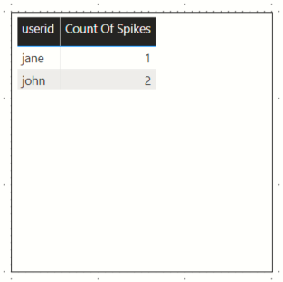
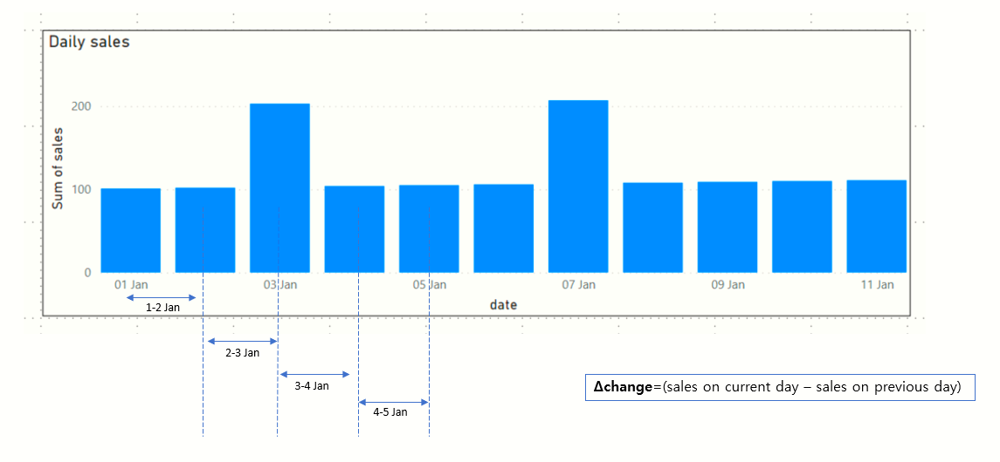
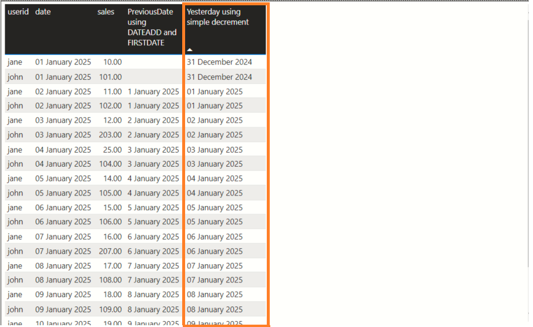
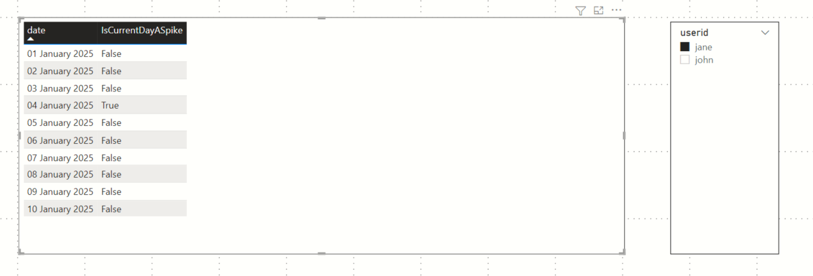

Consider a sales dataset which records the daily sales logged by every sales person. The columns are:
The bar chart of the daily sales per participant would appear as follows:
We can easily notice that there is a spike in sales for both John and Jane In this article we will arrive at a way to determine these "spikes" and also count their occurrences.
A spike can be defined as an abnormal jump in daily sales. We could define our own threshold. E.g. A daily jump of 10 or above.
We want to produce a table like the one below:

Also, show me a tooltip displaying the dates of the spikes.
Consider sliding a 2 day wide kernel across the following bar chart across each of the days. In each position compute the difference between the sales on current day and the sales on previous day. We will consider a spike if the Δchange is is greater than a certain threshold, say 10.

IsCurrentDayASpike =
//if delta change in sales exceeds this value, then we consider a spike
VAR THRESHOLD=10
var userid=SELECTEDVALUE(Sales[userid])
var currentDate = SELECTEDVALUE(Sales[date])
VAR prevDate=Sales[Yesterday]
VAR salesOnCurentDateFilter=FILTER(ALL(Sales), Sales[date]=currentDate && Sales[userid]=userid)
VAR salesPreviousDateFilter=FILTER(ALL(Sales), Sales[date]=prevDate && Sales[userid]=userid)
var salesOnCurrentDate = CALCULATE(MAX(Sales[sales]),salesOnCurentDateFilter)
var salesOnPreviousDate = CALCULATE(MAX(Sales[sales]),salesPreviousDateFilter)
var isSpike = IF((salesOnCurrentDate-salesOnPreviousDate)>THRESHOLD, TRUE(), FALSE())
var spike= IF(ISBLANK(salesOnPreviousDate), BLANK(), isSpike)
return spike
As we can see,the measure IsCurrentDayASpike relies on another measure Yesterday to calculate yesterday's date.
The code for the measure Yesterday is below. Unfortunately, DAX does not provide a easy way to compute relative dates using a single date value. The out of box DAX measure DATEADD is designed to operate on a dates table. Therefore, I am taking a more straightforward approach as shown below
Yesterday =
Var _SelectedDay = SELECTEDVALUE(Sales[date])
Var _PreviousDay = _SelectedDay - 1
VAR _Result =
IF(
HASONEVALUE(Sales[date]), _PreviousDay
)
Return _Result


This measure will aggregate all rows per user and filter on the measure IsCurrentDayASpike
CountOfSpikes =
VAR userid= SELECTEDVALUE(SalesPersons[userid])
VAR filterOnSpikes=FILTER(ALL(Sales), SalesPersons[IsCurrentDayASpike]=TRUE() && Sales[userid]=userid)
VAR countOfRows = COUNTROWS(filterOnSpikes)
return IF(ISBLANK(countOfRows),0,countOfRows)
https://github.com/sdg002/sdg002.github.io/tree/master/dax-find-spikes-daily-sales
The Power BI with worked out measures and visuals
The Excel which drives the Power BI